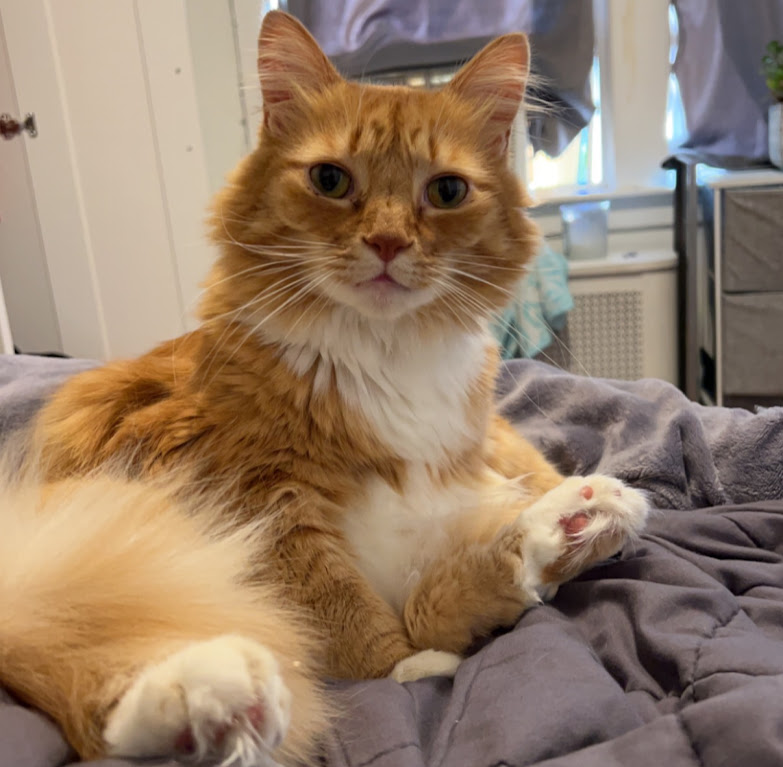

University of Rhode Island, 4.0/4.0 GPA (Graduating May 2026)
Double Major in Biotechnology (B.S.) and Cell and Molecular Biology (B.S.)
Relevant coursework:
Intro to Biotechnology
Issues in Biotechnology
Biotechnology Manufacturing Methods
General Physics I
Statistical Methods in Research
General Chemistry I
General Chemistry II
Principles of Biology I
Principles of Biology II
Skills
Programmed T100 thermal cyclers for polymerase chain reaction and coordinated gel
electrophoresis analysis of DNA.
Handled CHO-K1 mammalian cell line through the thawing, subculturing, and cryopreservation
process in compliance with aseptic technique. Quantified cells using a Neaubauer’s Slide
hemocytometer.
Conducted bacterial transformation for the expression of RFP in E.Coli.
Identified presence of antigen in solution using ELISA.
Constructed and analyzed qPCR standard curve.
Calibrated Sartorius bioreactor and utilized it for mammalian cell cultivation.
Awards
SkillsUSA Rhode Island: Awarded gold medal on a statewide level in a competition based
on the application of skills and knowledge in biotechnology in a professional laboratory
environment.
Pilgrim High School Science Award: Chosen out of my graduating class for the all around
science award based on academic success in a variety of STEM based coursework.
Biotechnology Proficiency Seal: Completed offered high school biotechnology pathway to
earn a seal of proficiency in the concepts and laboratory applications of biotechnology.
Women in Engineering Award: Selected for this award based on mastery of a variety of
math and science courses offered at my high school.
Cat

My lovely cat Mango
Work
Kent Hospital (March 2022 - Present)
Room Service Operator:
Cared for patients and their nutritional needs in compliance with their
dietary restrictions and meal requirements dependent on their conditions.
Iggy's Doughboy and Chowder House (June 2020 - March 2022)
Shift supervisor:
Ensured customer satisfaction through efficient and careful organization of
employees and tasks. Effectively trained incoming employees and employed leadership and
collaboration skills to establish harmony in the workplace.